Primeiros passos em pogramação em C
Bem-vindos, a esse pequeno tutorial de como se utilizar da forma mais básica possível a programação em C.
Antes começar a criar qualquer tipo de algoritmo ou programa, devemos aprender algumas coisinhas antes, começaremos com, o que são variáveis e como usa-las corretamente.
Variáveis são locais que servem para armazenar dados.Em C existem três tipos de variáveis, as do tipo Char, Int e Float.Cada várivel possui uma caracteristica diferente:
•Tipo Char:
Essa váriavel é utilizada para armazenar informações do tipo carácter, sendo elas números, letras ou carácters especiais.Exemplo:1,2,3,A,B,C,% e "lua".
•Tipo Int:
Essa váriavel é utilizada para armazenar informações do tipo inteiro, sendo elas números pertecentes aos inteiros.Exemplo:1,2,3,4 e 5.
•Tipo Float:
Essa váriavel é utilizada para armazenar informações do tipo real, sendo elas números pertecentes aos reais.Exemplo: 1,2,3.5,8.9 e 10.5
Agora precisamos aprender as estruturas de entrada de dados no seu programa.Para isso deve-se utilizar o "scanf" e o "printf".O pritf serve como ponte entre programador e usuário já que toda informação que você coloca dentro dele é mostrada para o usuário,exemplo: printf("Digite um número inteiro"), o programa ira escrer isso na tela do usuário.
O scanf serve para anexar qualquer tipo de dado vindo do usuário para o programa,exemplo: scanf("%d", &n1), o programa está anexando o dado colocando anteriormente pelo usuário em uma váriavel do tipo inteiro.
Para a realização de qualquer tipo de conta é necessário a utilização de termos especificos redirecionados para o C.Mas que em sua maioria é semelhante aos termos já utilizados normalmente, iremos aprender 10 termos, sendo eles:
•Atribuição de valor: para atribuição de qualquer valor em c é necessário a utilização do sinal = .Exemplo:X=3,logo o valor de X agora é 3.
•Soma: para realizar qualquer soma em C é necessário a utilização do sinal + .Exemplo: X=2+3,logo o valor de X agora é 5.
•Subtração: para realizar qualquer subtração em c é necessário a utilização do sinal - .Exemplo: X=2-3, logo o valor de X agora é -1.
•Multiplicação: para realizar qualquer multiplicação em c é necessário a utilização do sinal * .Exemplo: X=2*3, logo o valor de X agora é 6.
•Divisão: para realiza qualquer divisão em c é necessário a utilização do sinal / .Exemplo: X=10/2,logo o valor de X agora é 5.
•Raíz: para realizar qualquer raiz em c é necessário a utilização do termo sqrt.Exemplo: X=sqrt(16),logo o valor de X agora é 4.
•Potência: para realizar qualquer potência em c é necessário a utilização do termo pow.Exemplo: X=pow(2,3),logo o valor de X agora é 8.
•Igual: para realizar qualquer igualdade em c é necessário a utilização do sinal == .Exemplo: X=Y, sendo X igual a 0 e Y também.
•Maior: para demonstrar que um número ou variável é maior que a outra é utilizado o sinal > .Exemplo: X > Y, sendo X igual a 3 e Y igual a 2.
•Menos: para demonstrar que um número ou variável é maior que a outra é utilizado o sinal < .Exemplo: X < Y, sendo X igual a 0 e Y igual a 1.
Começaremos a fazer o nosso primeiro programa, para tal recomendo a utilizalção do programa DevC, após baixado abra o programa, clique na aba arquivo, após isso clique em novo, dentro da aba novo vai estar a opção arquivo fonte, clique nela para começarmos.
Como podem ver na imagem abaixo.
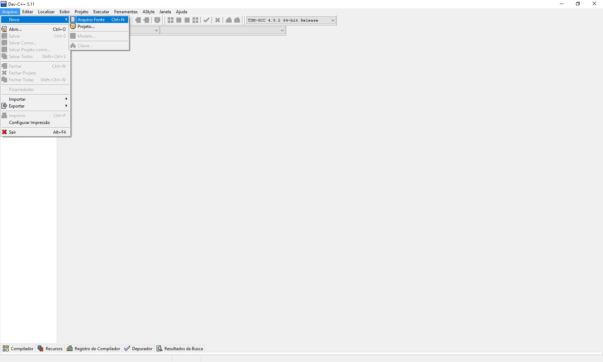
Bem começaremos a escrever um programa bastante simples, o programa ira ler três valores inteiros que o usuário escolher, ira soma-los e ira mostrar a sua soma ao usuário.Para todo começo de um programa deve-se utilizar o int main da seguinte forma.
Feito isso iremos colocar as variáveis, como são 3 valores inteiros, iremos criar 4 variáveis, 3 para os 3 valores inteiros inseridos pelo usuário e 1 para visualzação do resultado.
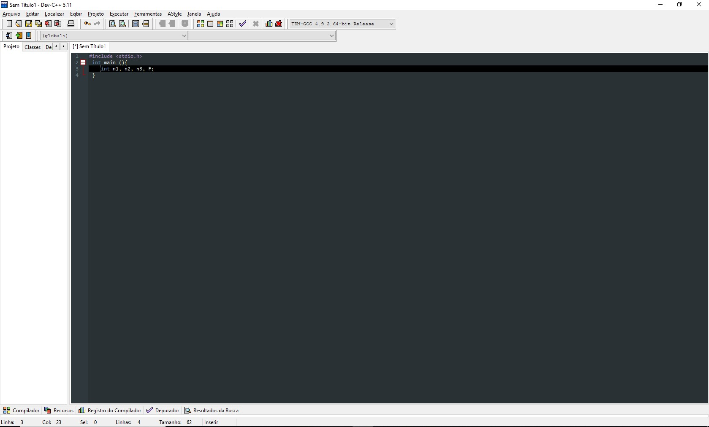
Obs:Para cada linha de comando ou ação deve-se utilizar o ";" no final.
Agora iremos colocar a estrutura de entrada de dados do programa utilizando o printf e o scanf da seguinte forma.
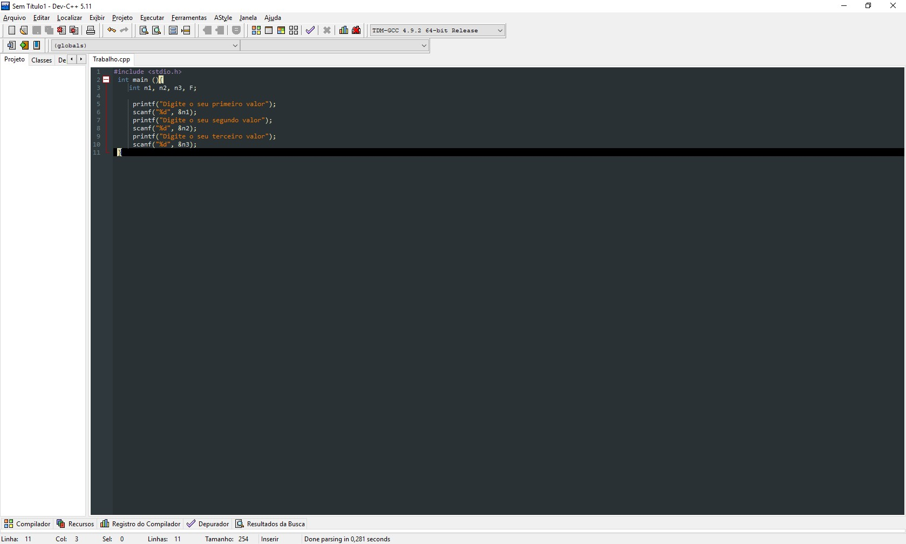
Obs: O %d presente no scanf serve para identificar que tipo de variável o programa vai ler no caso do %d ele corresponde a variável do tipo int(Inteiro), %f para variável do tipo float(Real) e %s ou %c para a do tipo char(Caracter).E toda variável inserida no scanf deve ser acompanhada do &.
Agora o programa já possui uma forma de entrada de dados, agora ele precisa de uma forma de processar esses dados.Nesse caso iremos fazer o seguinte:
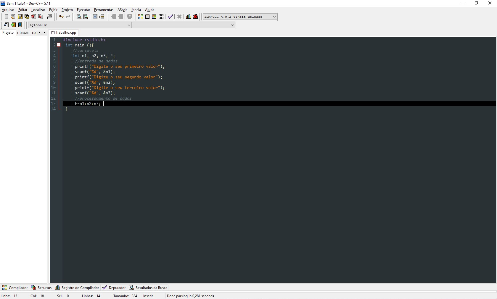
Para fecharmos esse inicio iremos agora mostrar o resultado dessa soma para o usuário.
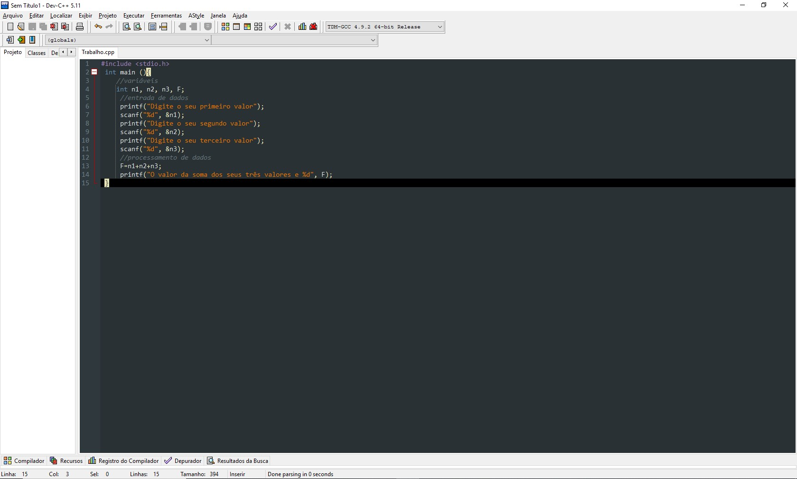
Para iniciar o programa basta clicar na aba executar e ir em compilar & executar ou simplesmente apertar F11.Durante a execução basta clicar no enter para confirma o dado inserido.
Obs: Como podem ver a utilização do %d no printf serve para demonstrar o valor encontrado no programa na tela do usuário. O final das chaves serve para mostrar o final do algoritmo.
Agora que montamos um algoritmo simples iremos aprender as estruturas de Condição If e Else e as estruturas de repetição For,While e Do While.Começaremos com as estruturas de Condição.
•if: Conhecido também como "se" é uma estrutura de Condição que é ativada quando sua condição é verdadeira.
•else: Conhecido também como "se não" é uma estrutura de condição que é ativada quando a condição tratada por if é falsa.
Iremos ver agora um programa que ira realizar a seguinte ação, ele ira comparar os valor de n1 e n2 e realizara uma condição, caso n1 seja menor que n2 o programa dirá "olá", caso contrário ele dirá "tchau".
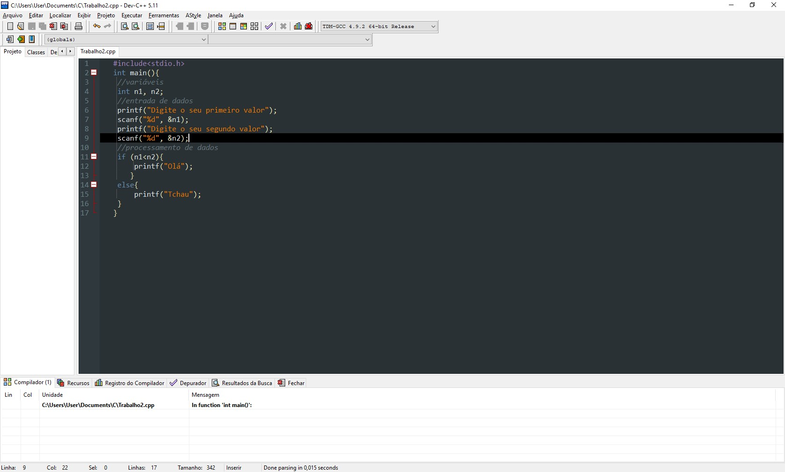
Obs: Podemos observar que as condições if e else são iniciadas e fechas por {}.
O primeiro valor obtido pelo programa, atendendo a condição n1< n2:
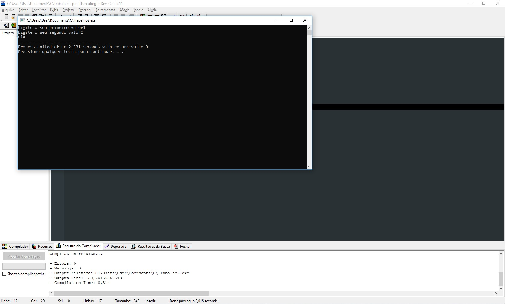
O segundo valor obtido pelo programa, sabendo a condição é falsa:
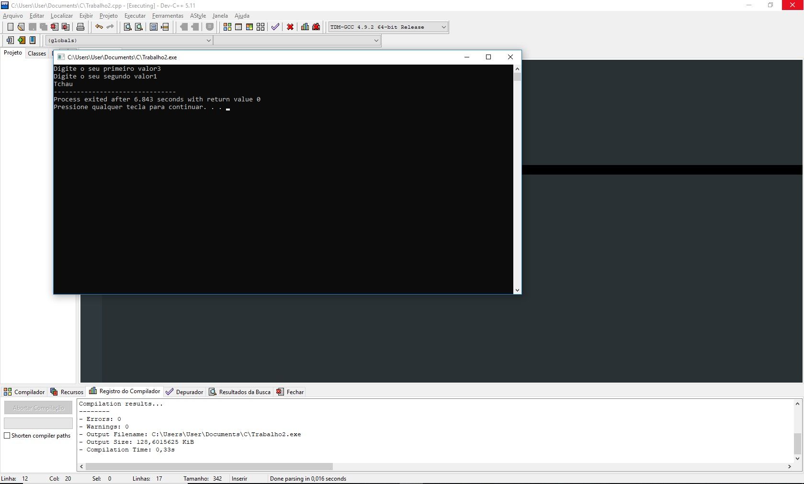
E por últlimo iremos ver as estruturas de repetição, para utiliza-las é necessário a biblioteca #include< conio.h> e do getch uma estrutura utilizada para parar a repetição.
•Laço for:Laço utilizado geralmente quando existe um termino definido, sempre vai tem um fim definido para esse laço implementado no inicio.
Sintaxe:
For (variável de inicialização; condição; incremento)
Veja o exemplo abaixo:
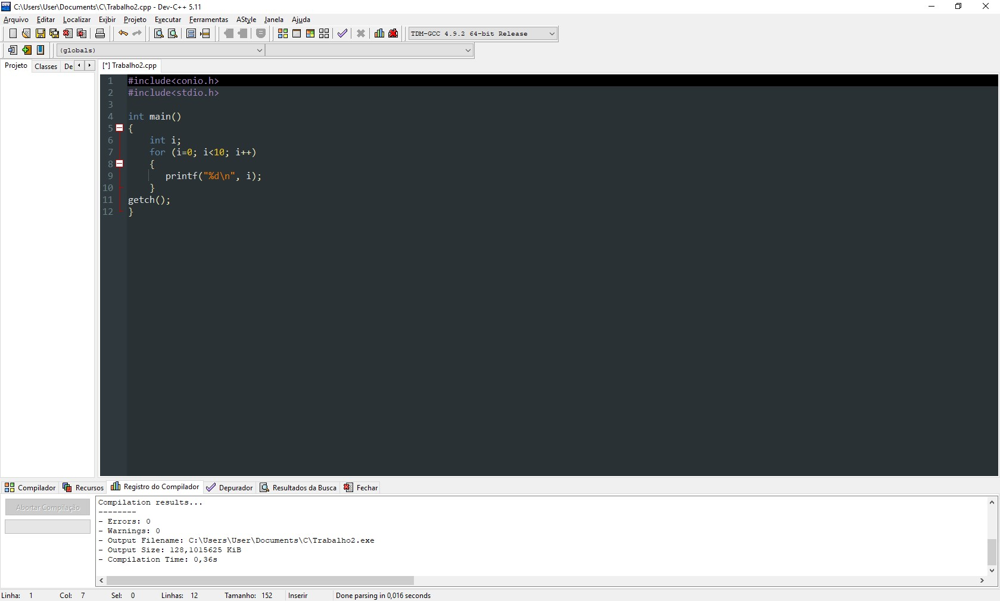
•Laço while:Laço que pode ter uma condição de termino definida já no inicio ou não.Necessariamente ele testa a condição e se caso for verdadeiro executa o bloco abaixo, caso seja falso ele vai para a próxima instrução fora do laço.
Sintaxe:
While (Condição)
{
Comandos;
}
Condição: Pode ser qualquer expressão valida ou até quando a verdadeira.
Comando: pode ser um bloco de comando vazio ou de repetição definido por um termino.
Exemplo:
Definindo o término
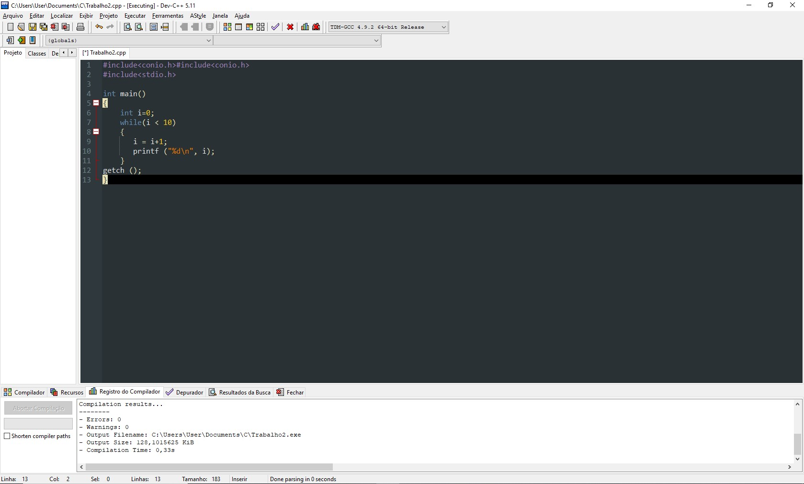
Termino definido pelo usuário
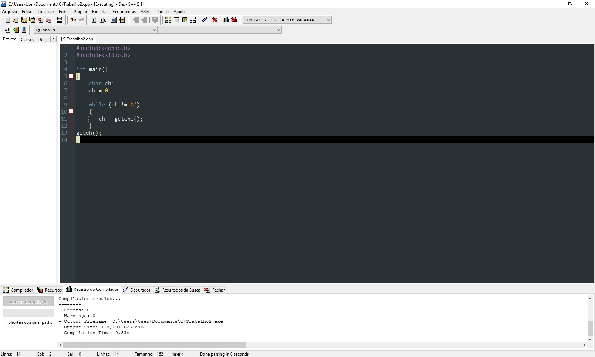
•Laço Do While:Laço quase igual ao While, a diferença é que primeiro ele executa um bloco e testa a condição, caso seja falsa vai para o próxima instrução.
Sintaxe:
Do
{
Comandos;
} while(condição);
Exemplo:
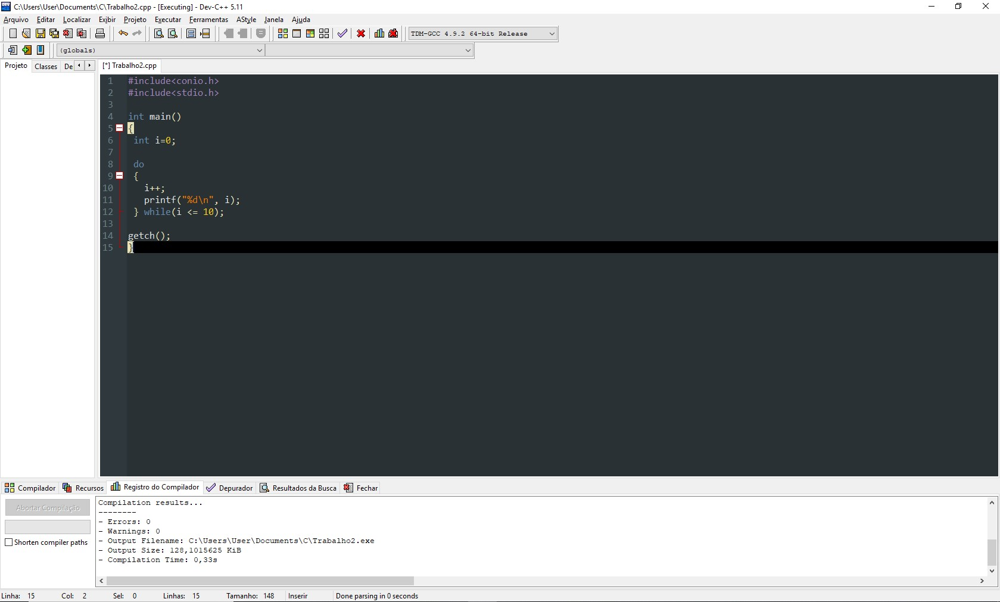
Fonte